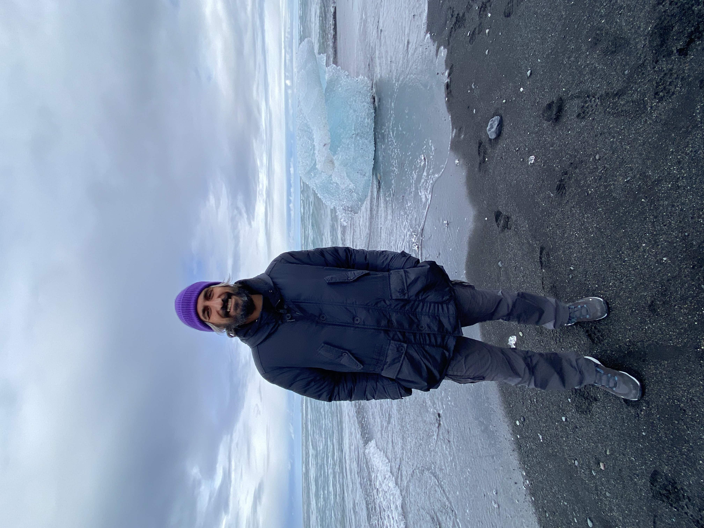

Luca Colombo
I am a Professor of Economics. My research interests lie in dynamic games, industrial organization, and environmental and natural resource economics.
My research studies strategic interactions in dynamic economic environments, with applications to firms, environmental policy, natural resources, and markets.
Research
Research interests: Dynamic Games · Industrial Organization · Environmental and Resource Economics
Publications
Selected publications and working papers will be available here.
Teaching
Information on current and previous teaching activities.
Curriculum Vitae
CV available soon.
Contact
Academic contact information will be available here.